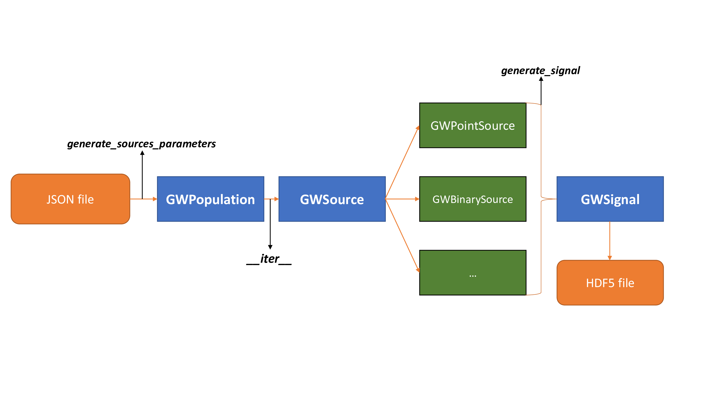

Overview¶
Overview of the simulation scheme
How it works: The simulator structure¶
The basics of simulation are collected in tools providing parameters generation of GW sources and classes for the signal source formatting in hdf5 files.
generate_sources_parameters.py: given a JSON file containing the distribution of parameters for each kind of source, generates a second JSON file containing the arguments required to simulate all relative waveforms;
generate_waveforms.py: given the generate_sources_parameters.py JSON output file, the simulation start time, the duration and the detector to which the source signal must be projected, this tool generates a hdf5 file containing the simulated GW data;
Warning
generate_waveforms.py will be modified in next versions with the source class utilities.
Available sources¶
Gwskysim provides different types of gravitational waves sources that can be generated and simulated. One generated your JSON file with source parameters, use this method in order to create your model for simulation:
cls.from_file('path/to/your_JSON_file.json')
cls can be one of the avalable source classes in gwskysim. If you are a developer and you want into add your source to gwskysim, follows the notes to developers.
GWPointSource¶
This is the base class for gravitational point source, characterized by:
ra: right ascension of the source;
dec: declination of the source;
polarization: polarization angle of the source emission;
inclination: inclination of the source main axis;
These parameters are necessary for the waveform calculation and the detector projection. Strarting from this class, every point-like gravitational source can be simulated;
GWBinarySource¶
This is the class encoding the close encounter binary sources of gravitational waves. This class simulate the waveform using the analytical template provided by Loutrel (2020). The waveform is valid for BH-BH and in some cases for NS-BH systems. The additional parameters to specify are:
distance : distance of the source from the detector;
e0: eccentricity of the orbit containing the neutron star.
p0: semi-latus rectum of the binary system;
m1: mass of the first body of the system;
m2: mass of the second body of the system;
tp: epoch of periastron passage in GPS time;